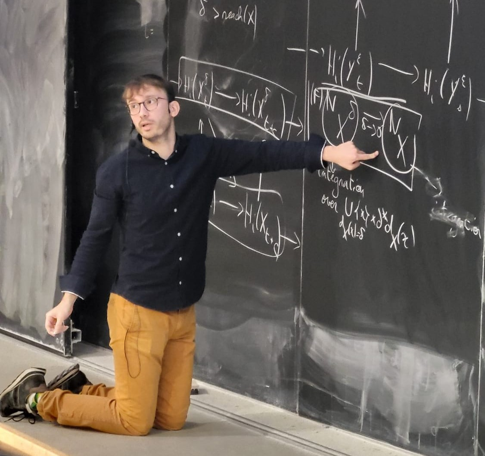

Antoine Commaret

Papers
Persistent Intrinsic Volumes ; arXiv version, 2024. With David Cohen-Steiner. Published in Advances in Mathematics.Generalized Morse theory for tubular neighborhoods, arXiv version, 2024. To appear in JTA (Journal of Topology and Analysis) .
Modeling high dimensional point clouds with the spherical cluster model, arXiv Preprint, 2025. With Frédéric Cazals & Louis Goldenberg.
Continuity of the normal cycle with respect to C^0 topologies , arXiv Preprint, 2026. With David Cohen-Steiner.
Future talks
- October 2nd: Talk Integral Geometry Day Paris, Jussieu.
- November 4th: Online talk at Applied Algebraic Topology Research Network (AATRN). Link to be made available in October.
Presentation slides
- Approximating the boundary area: when persistent homology meets geometric measure theory. Talk given at the conference Curves and surfaces. June 2026, Saint-Malo, France, and at Foundations of computational mathematics, Vienna, Austria.
- Persistent homology and the continuity of generalized curvatures. Talk given at the Persistent day, a day dedicated the different applications of persistence theory in geometry and topology. Nice, France. June 2026,
- Slides of my PhD Defense. 20th December 2024.
- Here is a talk given at the Applied Topology seminar at Oxford University about Generalized Morse theory for tubular Neighborhoods. 16th February 2024.
- Here is a talk given at the 2023 YTM in Lausanne about Generalized Morse Theory for certain subsets of Euclidean spaces. July 2023
- Here is a very quick introduction to TDA given at the ARAMIS Lab Seminar, October 2022.
- Talk on basic concepts of geometric measure theory given at the Datashape Seminar, May 2022.
Seminar talks
- Seminar Geometry and topology at Sorbonne Université, Paris. 19th February 2026.
- Seminar of the Jean Kutzmann lab, Grenoble, France. 13th March 2025.